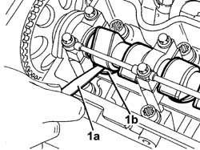

1036H14 VALVE TAPPET CLEARANCE CHECK
- Path
- Procedures > 10 ENGINE > 1036 TIIMING SYSTEM > 1036H TAPPETS AND ROCKER SHAFTS > 1036H14 VALVE TAPPET CLEARANCE CHECK
- Kind
- repair procedure (removal / refitting; the operation number is the code)
- Applies to
- engines: 2.4 JTD 10V; all production periods
- Interactive page
- https://sloeber94.github.io/elrnDB-lThss/en/#/98707
Applies to: all engines; all production periods
 Removing
Removing
 Refitting
RefittingSee in Op. 1016A10
See in Op. 1016A20
1. Using a feeler gauge (1a), measure the clearance (1b) between the camshaft lift and a tappet shim.
- Rotate the camshaft and check the clearance for all the tappets.
 | Subject | Value |
|---|---|---|
. | Inlet valves clearance in closed position | mm |
- | Inlet valves clearance in closed position | 0.25 - 0.35 |
| Subject | Value |
|---|---|---|
. | Exhaust valves clearance in closed position | mm |
- | Exhaust valves clearance in closed position | 0.30 - 0.40 |

Applies to: all engines; all production periods
Refitting
RemovingSee in Op. 1016A20
See in Op. 1016A10